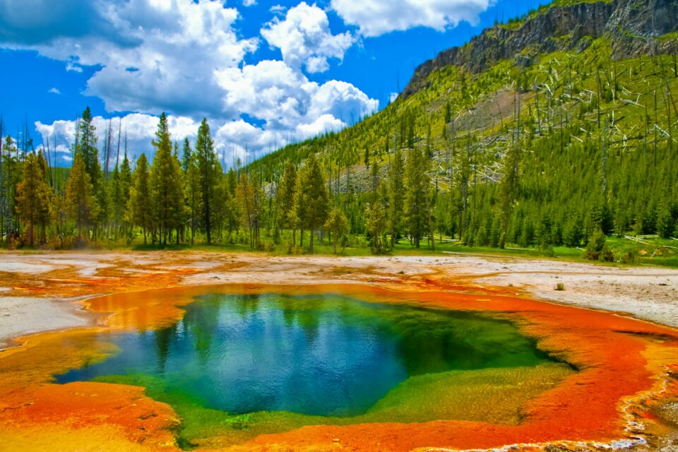
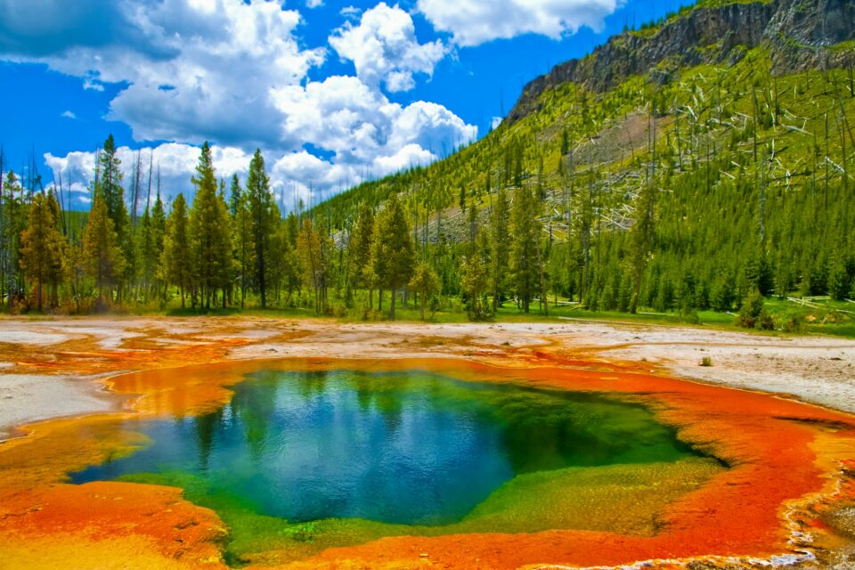
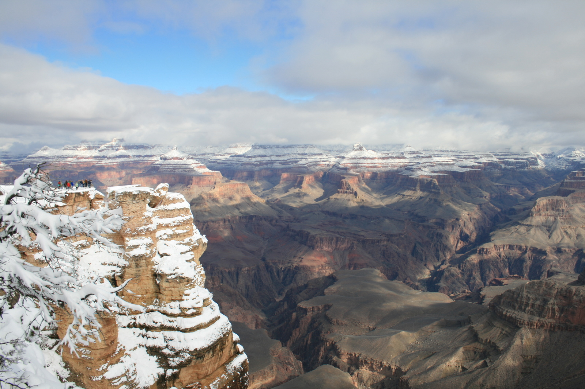
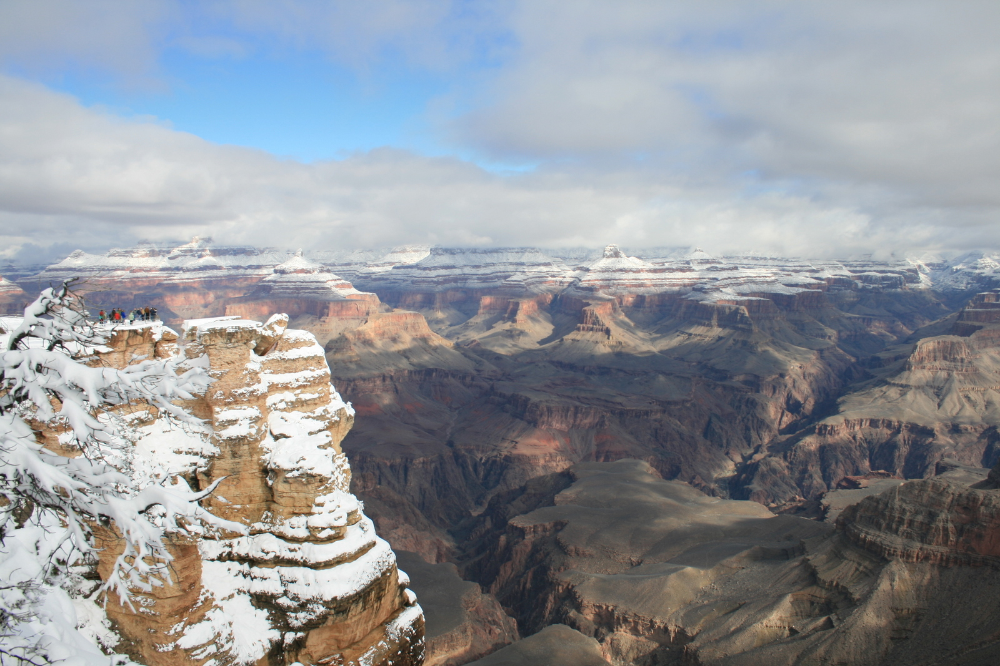
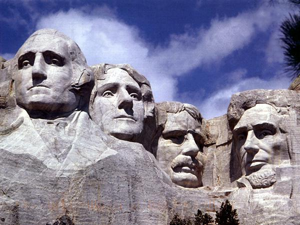

Yellowstone
 

Geographical Location: North America
Nestled in the rugged wilderness of the American West, Yellowstone National Park stands as a living testament to the raw power and unparalleled beauty of the natural world. Established in 1872, it holds the distinction of being the world's first national park, a title that only hints at the remarkable wonders it contains. Covering over 2.2 million acres across the states of Wyoming, Montana, and Idaho, Yellowstone is a vast, untamed landscape teeming with geothermal marvels, pristine lakes, towering waterfalls, and an incredible array of wildlife.
The park's geological features are a testament to its dynamic past, with bubbling geysers, steaming hot springs, and the iconic Old Faithful geyser captivating the imagination of visitors from around the globe. Beyond its geothermal wonders, Yellowstone offers a sanctuary for diverse ecosystems, from dense forests to sweeping grasslands, where grizzly bears, wolves, bison, and elk roam freely.
To learn more details or inquire about travel information, you can visit National Park Service or Yellowstone Park
Photo Gallery


Niagara Falls


Geographical Location: North America
Niagara Falls, one of the most iconic and awe-inspiring natural wonders on Earth, holds a special place in the hearts of travelers and nature enthusiasts alike.
Situated on the border between the United States and Canada, this magnificent waterfall complex is a testament to the raw power and beauty of nature. Its thundering waters and mist-shrouded cliffs have captivated the imaginations of millions, drawing visitors from across the globe to witness its sheer grandeur.
To learn more details or inquire about travel information, you can visit Niagara Parks or Niagara Falls US Side Tickets
Photo Gallery


Grand Canyon
 

Geographical Location: North America
Nestled within the heart of the American Southwest, the Grand Canyon stands as a testament to the incredible forces of nature that have shaped our planet over millions of years. This colossal chasm, one of the world's most celebrated natural wonders, has earned its reputation for awe-inspiring grandeur and breathtaking beauty.
Carved by the mighty Colorado River over eons, the Grand Canyon is a geological marvel that showcases the Earth's history in its stratified rock layers, each revealing a chapter in the story of our planet's evolution.
To learn more details or inquire about travel information, you can visit National Park Service or Grand Canyon Tours
Photo Gallery


Yosemite
Geographical Location: North America
Nestled amidst the majestic Sierra Nevada mountain range in California, Yosemite National Park beckons adventurers and nature enthusiasts to explore its pristine wilderness.
This remarkable natural sanctuary, often described as a living masterpiece, is a testament to the unrivaled beauty and diversity of the American wilderness. Yosemite's breathtaking landscapes are a harmonious blend of towering granite cliffs, lush valleys, cascading waterfalls, and ancient forests, creating an environment that has captivated the hearts of countless visitors for generations.
To learn more details or inquire about travel information, you can visit National Park Service or Yosemite Travelling
Photo Gallery


Mount Rushmore
Geographical Location: North America
Nestled amidst the Black Hills of South Dakota, Mount Rushmore National Memorial stands as a striking symbol of American history and ingenuity. This iconic monument is a tribute to some of the nation's most revered leaders, etched into the granite face of the mountain as a lasting testament to their contributions and the enduring spirit of democracy.
Mount Rushmore's massive sculpted faces, depicting the likenesses of Presidents George Washington, Thomas Jefferson, Theodore Roosevelt, and Abraham Lincoln, evoke a sense of awe and patriotism in the hearts of all who visit. Carved by the skilled hands of artist Gutzon Borglum and his team of workers, this colossal artwork took over 14 years to complete and has since become an emblem of American pride and unity.
To learn more details or inquire about travel information, you can visit National Park Service or National Geography
Great Smoky Mountains


Geographical Location: North America
Nestled along the border of North Carolina and Tennessee, the Great Smoky Mountains National Park stands as a testament to the astonishing beauty and biodiversity of the Appalachian region. This sprawling wilderness area is renowned for its rolling, mist-shrouded peaks, lush forests, and a rich tapestry of life that encompasses vibrant flora and fauna.
The Great Smoky Mountains, often referred to simply as the Smokies, owe their name to the ethereal mist that frequently veils their summits, creating an enchanting and almost magical atmosphere. This national park is not only a haven for outdoor enthusiasts and hikers but also a treasure trove of natural wonders, offering a glimpse into the unspoiled beauty of the Eastern United States.
To learn more details or inquire about travel information, you can visit National Park Service or The Great Smoky Mountains National Park
Photo Gallery